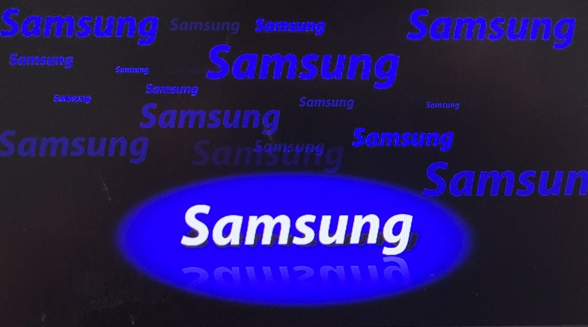

Samsung Electronics Co., Ltd. — світовий лідер в сфері виробництва напівпровідників, телекомунікаційного та цифрового медіаобладнання,
а також у сфері технологій цифрової конвергенції. Консолідовані продажі компанії у 2010 році становили 135,8 млрд доларів США. Штат
Samsung Electronics нараховує близько 190,5 тис. співробітників, які працюють у 206 офісах у 68 країнах світу. Будучи одним із
найшвидкоростучих світових брендів, Samsung Electronics лідирує на ринках цифрових телевізорів, мікросхем пам'яті, мобільних
телефонів та LCD-дисплеїв.
Філософія та цілі Samsung
Samsung дотримується простої філософії бізнесу: використовувати людські та технологічні ресурси компанії для створення товарів і послуг неперевершеної якості, здійснюючи тим самим свій внесок у поліпшення стану суспільства в усьому світі. Саме тому Samsung надає дуже велике значення персоналу та технологіям.
Основні цінності Samsung
Компанія Samsung переконана, що дотримання правильних цінностей — запорука успіху в бізнесі. Тому під час ухвалення кожного рішення Samsung керується основними корпоративними цінностями, а також суворим кодексом поведінки.
П’ять принципів ведення бізнесу в компанії Samsung
Висловлюючи свою прихильність принципам корпоративної соціальної відповідальності, у 2005 році провідна міжнародна компанія Samsung Electronics оприлюднила «П’ять принципів ведення бізнесу в компанії Samsung». Ці принципи лягли в основу її глобального кодексу поведінки. Вони забезпечують дотримання законодавчих та етичних норм і виконання корпоративних соціальних зобов’язань.
Samsung Galaxy S22 Ultra
У ньому об'єдналися головні особливості топових Galaxy S: просунуті камери, екран і флагманський процесор, до яких приєдналися стилус S Pen та більш строгий дизайн корпусу. Вийшов один із найтехнологічніших флагманів на даний момент. Смартфон отримав чудовий і неймовірно яскравий екран, один із найкращих на ринку. Система тильних камер є максимально функціональною та чудово знімає практично в будь-яких умовах. Новий флагманський процесор Exynos 2200 може похвалитися дуже високою продуктивністю, достатньою для будь-яких вимогливих завдань чи ігор. Але при цьому й гріється він дуже відчутно. До всього вищезгаданого варто додати наявність у смартфона захисту від пилу та води за стандартом IP68, а також гучного та якісного стереозвуку. Серед претензій до смартфона можна пред'явити скромний час автономної роботи. Хоча для флагманів це звична ситуація.